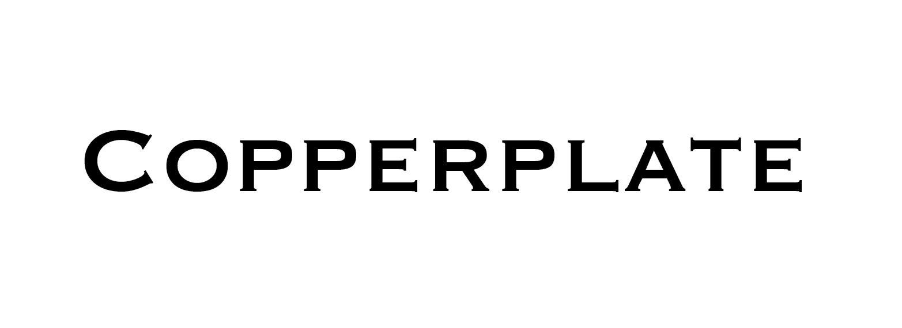

Kaari
Overview
For a graphic design course I did at university, I was told to design a poster for a famous designer, Bouroullec's exhibition at the Vancouver Art Gallery.
Initial process
I began by looking through their work and designs. I wanted to reflect their style in some way on the poster. I found a few images of their work that I could use and started designing the poster on illustrator. This was the first time I didn't sketch before designing, and I wanted the image to be the main element of the poster; hence I started aligning the text blocks to the image for a clear visual flow. The image below shows the flow I was going for.

Type Selection
I wanted to experiment with font this time. I generally stick to specific fonts that I like and which are neutral. Looking at how Bouroullec experiments with their design, it motivated me to go ahead and use an unconventional font like copperplate. It was a huge risk to use only copperplate for all text, but I believe it was worth taking the risk as it gave me the confidence to experiment.
Reflection
I think I did a good job on the poster and showed my visual design skills pretty well. However, one that I can improve on is by exploring Bouroullec's style even more and not just relying on their work's image.